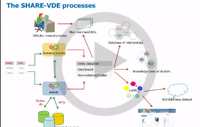

Presentations
- BIBFRAME Update Forum, June 24, 2020 (program and presentation slides)
- BIBFRAME Update Forum at ALA, January 26, 2020 (program and presentation slides)
- IFLA Satellite Meeting on August 21, 2019, "How does LC within BIBFRAME intend to accomodate RDA 3R?" [PPTX, 1.18MB]
- BIBFRAME Update at ALA on June 23, 2019 (program and presentation slides)
- BIBFRAME Update at ALA on January 27, 2019 (program and presentation slides)
Webcasts
BIBFRAME Goes International - April 2, 2019
 BIBFRAME, a Library of Congress data model for bibliographic description designed to replace the MARC standards, is seeing activity around the globe. In this presentation, Library staff review current activity of the BIBFRAME model on the international scene, including how Europe is exploring BIBFRAME, the interest in other parts of the globe and a large new project closer to home. Included are developments in the roles being played in the support of BIBFRAME by the Program for Cooperative Cataloging and the Italian book and metadata supplier, Casalini Libri.
BIBFRAME, a Library of Congress data model for bibliographic description designed to replace the MARC standards, is seeing activity around the globe. In this presentation, Library staff review current activity of the BIBFRAME model on the international scene, including how Europe is exploring BIBFRAME, the interest in other parts of the globe and a large new project closer to home. Included are developments in the roles being played in the support of BIBFRAME by the Program for Cooperative Cataloging and the Italian book and metadata supplier, Casalini Libri.
View Webcast
BIBFRAME 2.0, the Library of Congress Pilot & Next Steps - June 12, 2018
 Beacher Wiggins highlighted the goals and accomplishments of the Library of Congress' BIBFRAME 2.0 pilot to date and gave an overview of the next steps. Nate Trail discussed the development of the BIBFRAME database, a complete base file that includes all the bibliographic records from Voyager. Catalogers use the bibliographic data in combination with authority data from id.loc.gov to describe resources for the BIBFRAME 2.0 pilot. Trail demonstrated features of the BIBFRAME database interface including end-user search capability, use of linked data queries to highlight relationships between resources and how the database interacts with data entered through the BIBFRAME editor. Jodi Williamschen and Les Hawkins discussed profiles developed for the BIBFRAME editor and illustrated workflows such as creation of a new work and instance, adding instance descriptions to an existing work, updating of an initial bibliographic control (IBC) description and creating new expressions relating to an existing work.
Beacher Wiggins highlighted the goals and accomplishments of the Library of Congress' BIBFRAME 2.0 pilot to date and gave an overview of the next steps. Nate Trail discussed the development of the BIBFRAME database, a complete base file that includes all the bibliographic records from Voyager. Catalogers use the bibliographic data in combination with authority data from id.loc.gov to describe resources for the BIBFRAME 2.0 pilot. Trail demonstrated features of the BIBFRAME database interface including end-user search capability, use of linked data queries to highlight relationships between resources and how the database interacts with data entered through the BIBFRAME editor. Jodi Williamschen and Les Hawkins discussed profiles developed for the BIBFRAME editor and illustrated workflows such as creation of a new work and instance, adding instance descriptions to an existing work, updating of an initial bibliographic control (IBC) description and creating new expressions relating to an existing work.
View Webcast
The SHARE-VDE Project: Fulfilling the Potential of BIBFRAME - February 6, 2018
Michele Casalini and Tiziana Possemato discuss the SHARE Virtual Discovery Environment in Linked Data, a library community-driven research and development project with the main goal of contributing in bringing BIBFRAME into practice for the benefit of librarians and library patrons. Through the individual processes of analysis, enrichment, reconciliation, conversion and publication of data from MARC21 to RDF, and in the context of libraries with different systems, habits and cataloguing traditions, a three BIBFRAME layer architecture environment is established.
View Webcast